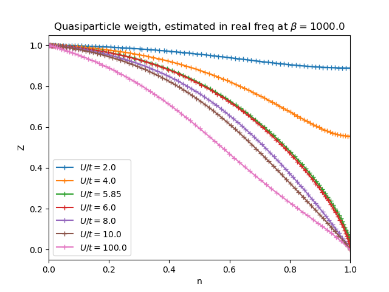

Quasiparticle decay for different local interaction strenghts¶
Ploting the Quasiparticle weight at different local interaction strenghts at different doping amounts
# Code source: Óscar Nájera
# License: BSD 3 clause
from __future__ import division, absolute_import, print_function
import matplotlib.pyplot as plt
import numpy as np
from dmft.twosite_dop import dmft_loop_dop
def plot_z(axis='real', beta=1e3, u_int=[2., 4., 5.85, 6., 8., 10., 100.]):
fig = plt.figure()
for u in u_int:
out_file = axis + '_dop_b{}_U{}'.format(beta, u)
try:
res = np.load(out_file + '.npy')
except IOError:
res = dmft_loop_dop(u)
np.save(out_file, res)
zet = [sim.imp_z() for sim in res[:, 1]]
plt.plot(res[:, 0], zet, '+-', label='$U/t= {}$'.format(u))
plt.legend(loc=0)
plt.title(
'Quasiparticle weigth, estimated in real freq at $\\beta={}$'.format(beta))
plt.ylabel('Z')
plt.xlabel('n')
plt.xlim([0, 1])
fig.savefig(out_file + '_Z.png', format='png',
transparent=False, bbox_inches='tight', pad_inches=0.05)
plot_z()
Total running time of the script: ( 0 minutes 1.234 seconds)